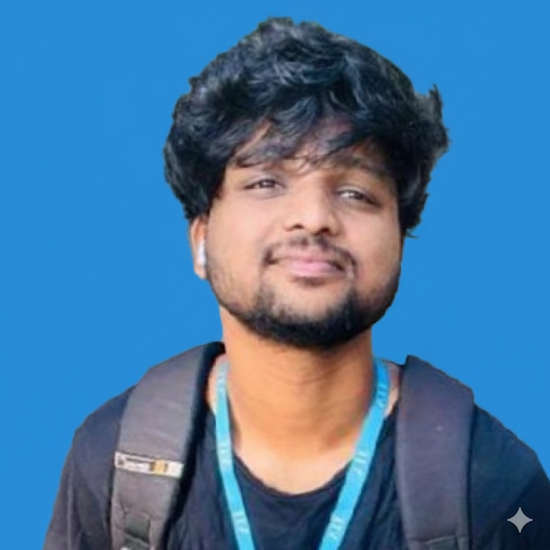

DevOps & Cloud Security Engineer
Machine Learning and Cloud DevOps enthusiast with a Master of Computer Applications (MCA) from VIT Vellore. Passionate about building scalable AI solutions, secure cloud infrastructure, and bridging cutting-edge ML models with robust automated deployment pipelines.
Over 2 years of combined experience in software development, data engineering, cloud security, and IT support. Proven expertise in DevSecOps practices, AWS deployments, CI/CD automation, and vulnerability management.
Research Associate / Software Developer | Mar 2025 – Present
AWS Cloud Intern | Oct 2024 – Dec 2024
IT Support Technician | Jun 2023 – Aug 2024
Tech: AWS EKS, CI/CD, Vulnerability Scanning, CloudWatch
Vellore Institute of Technology (VIT), Vellore | 2024
Vels Institute of Science, Technology & Advanced Studies, Chennai | 2022